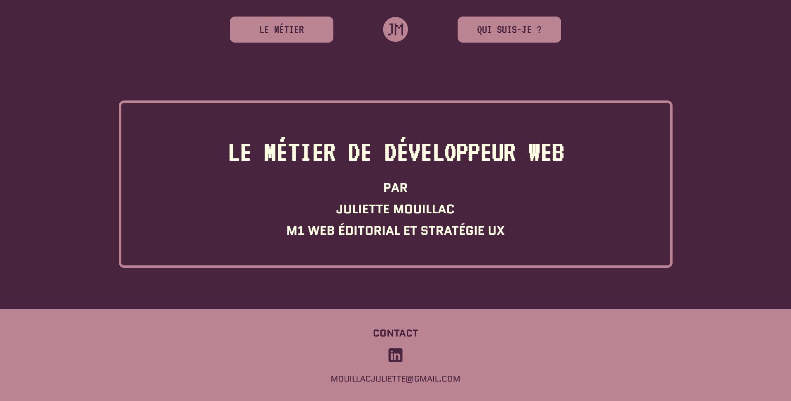

<!DOCTYPE html>
<html lang="fr">
<head>
    <meta charset="UTF-8">
    <meta name="viewport" content="width=device-width, initial-scale=1.0">
    <title>Sites web Juliette Mouillac</title>
    <script async src="https://www.googletagmanager.com/gtag/js?id=G-RLG9SQFGNL"></script>
<script>
  window.dataLayer = window.dataLayer || [];
  function gtag(){dataLayer.push(arguments);}
  gtag('js', new Date());

  gtag('config', 'G-RLG9SQFGNL');
    <link rel="stylesheet" href="style.css">
    <link rel="icon" type="image/x-icon" href="logoinitiales.ico">
    <link rel="preconnect" href="https://fonts.googleapis.com">
<link rel="preconnect" href="https://fonts.gstatic.com" crossorigin>
<link href="https://fonts.googleapis.com/css2?family=Afacad:ital,wght@0,400..700;1,400..700&family=Inter:ital,opsz,wght@0,14..32,100..900;1,14..32,100..900&family=Modak&display=swap" rel="stylesheet">

</head>
<body>
    <header>
        <a href="index.html"></a>
        <nav>
            <ul>
                <li><a href="about.html">A propos</a></li>
                <li><a href="projets.html">Projets</a></li>
                <li><a href="contact.html">Contact</a></li>
            </ul>
        </nav>
    </header>
    <main>
        <h2 class="titre">Projets web</h2>
        <div class="container">
            <div class="section" id="esportsite">
                <div class="image-part">
                    
                </div>
                <div class="text-part">
                    <h3 class="sous-titre">Esport olympique</h3>
                    <p>Ce projet a été réalisé dans le cadre de mon <b>Master web editorial et stratégie UX</b>.
                        En groupe de 5, nous avons dû choisir un thème et développer le <b>storytelling</b> à partir d’un sujet donné, le <b>sport</b>.
                    </p>
                    <p>Notre choix s’est rapidement porté sur <b>l’esport</b>, une passion commune qui nous a permis de concevoir un projet <b>engageant</b> et <b>innovant</b>.
                    </p>
                    <p>Dans cette collaboration, j’ai occupé le rôle de <b>développeuse web</b>, mettant mes compétences en code et en UX au service de la conception d’un site <b>immersif</b> et <b>interactif</b>.
                    </p>
                    <a class="button" href="esport-site/index.html">Visiter</a>
                </div>
            </div>
            <div class="section inverted" id="mandosite">
                <div class="image-part">
                    
                </div>
                <div class="text-part">
                    <h3 class="sous-titre">The Mandalorian</h3>
                    <p>J’ai développé ce site lors de ma dernière année de licence <b>LEA Anglais-russe</b>. Il s’agit de mon <b>premier projet</b> en HTML/CSS.</p>
                    <p>Chacun devait choisir une série TV à représenter, en gardant <b>l’atmosphère graphique</b> de celle-ci. Grande fan de Star Wars et de cette série, j’ai très rapidement choisi <b>“The Mandalorian”</b>.
                    </p>
                    <a class="button" href="the-mandalorian-site/Index.html">Visiter</a>
                </div>
            </div>
            <div class="section" id="metiersite">
                <div class="image-part">
                    
                </div>
                <div class="text-part">
                    <h3 class="sous-titre">Présentation métier</h3>
                    <p>J’ai conçu ce site web lors de ma première année de Master, dans le cadre du cours <b>“Projet Professionnel Étudiant”</b>. 
                        L’objectif était de créer un support en complément d’une <b>présentation orale</b> sur le métier de notre choix. J’ai choisi de 
                        mettre en lumière le métier de <b>développeur web</b>, une voie que je souhaite emprunter pour mon avenir professionnel.</p>
                    <a class="button" href="dev-web-site/accueil.html">Visiter</a>
                </div>
            </div>
        </div>
        <a href="maquettes.html" class="voir-plus">Voir les maquettes &#129170</a>
        </main>
    <footer>
        <ul class="footer-menu">
            <li><a href="https://www.linkedin.com/in/juliette-mouillac/"></a></li>
            <li><a href="about.html">A propos</a></li>
            <li><a href="projets.html">Projets</a></li>
            <li><a href="contact.html">Contact</a></li>
        </ul>
    </footer>
</body>
</html>
